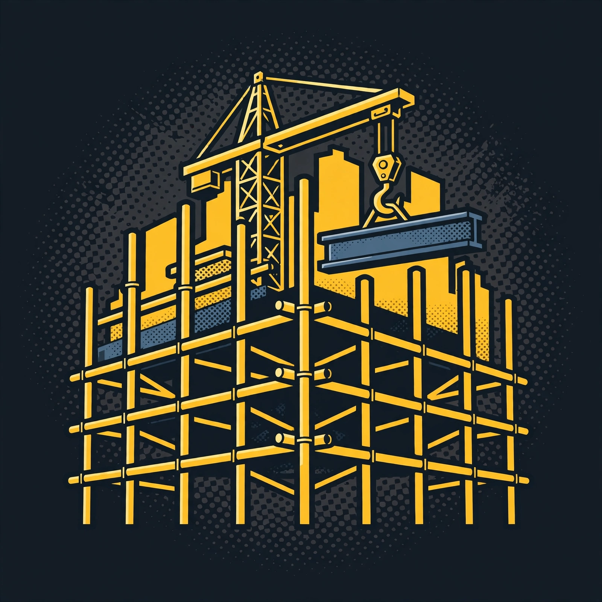

BuilderSpace brings the coding and startup world from San Francisco / Silicon Valley to the towns on the tour — a new tech region — to empower them, match builders with potential employers, and bridge the tech divide, through events, hackathons, and builder days.
This page walks an AI agent (and any new builder) through BuilderSpace in reading order: what the tour is, what is confirmed and what is not, and the real doors to knock on. BuilderSpace is a planned builder tour — everything below keeps that status visible on purpose.
PLANNED — Nov 2026–May 2027 · Venues & sponsors not yet confirmedA public-benefit builder tour and onboarding community under the line "A place for all to build and become." San Francisco and Silicon Valley builders travel to Louisiana and Nebraska — the new tech region — for hackathons, build weekends, pitch nights and speaker spaces, training alongside local builders and matching them with potential employers. Five free online onboarding nights run first in late 2026 (6:00–7:30pm Central), then eleven tour events run January–May 2027. The full event list and roadmap are on the home page.
All 16 events (5 onboarding + 11 tour) are planned and currently Private/unlisted on Luma. No venues, sponsors, speakers, or partners are confirmed, and no invites have been sent. Registrations are open through the site and Luma as events are confirmed there — details appear on Luma first. An agent summarizing BuilderSpace must carry the word "planned" with every event, date, and city, and must never present a venue, sponsor, or partner as confirmed.
In order:
Two mailboxes, both read by the tour's human team:
Start with the onboarding nights — they are free, online, and built for first-time builders and career switchers as much as founders. The tour's Session 01, Welcome to the Tour, runs online on Friday, December 4, 2026, 6:00–7:30pm Central, Private on Luma at luma.com/l46num48. Event listings live on Luma and are currently Private/unlisted while the season is being set up — begin on the home page's onboarding section and write to events@builderspace.tech with any question.
[Versión en español en preparación — esta sección es un marcador mientras se traduce la guía completa.]
BuilderSpace es una gira planificada de constructores por el Medio Oeste: noches de incorporación en línea (noviembre–diciembre de 2026) y eventos en Luisiana y Nebraska (enero–mayo de 2027). Todos los eventos están en planificación; ningún lugar ni patrocinador está confirmado todavía. Contacto: events@builderspace.tech.
Films: the New Orleans films and the Session 01 countdown live in the films section of the home page — verified files on record, with watch links pending the film hosting decision.
Library → Books B1 and B10; guides G4, G8, G13, and G14; the full 25-course DevRel Academy catalogue; and the BuilderSpace film and session archive. Status: staging slot — page not yet built.
Store → Books, Academy course waitlist seats, and tour swag, in waitlist mode only — joining a waitlist costs nothing, is not a purchase, and no payment is taken. Status: staging slot — page not yet built.